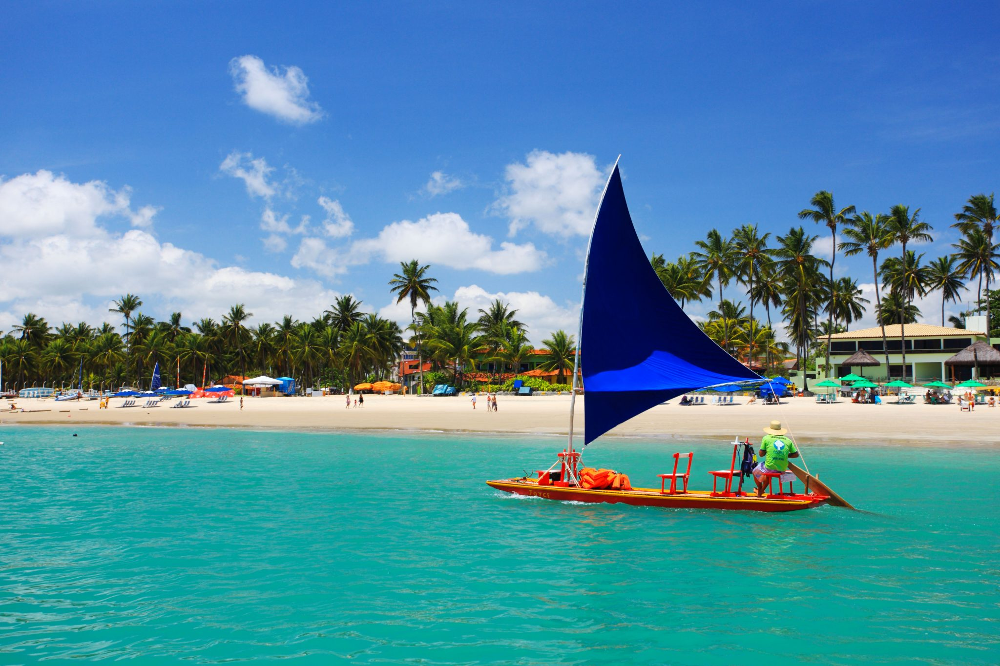
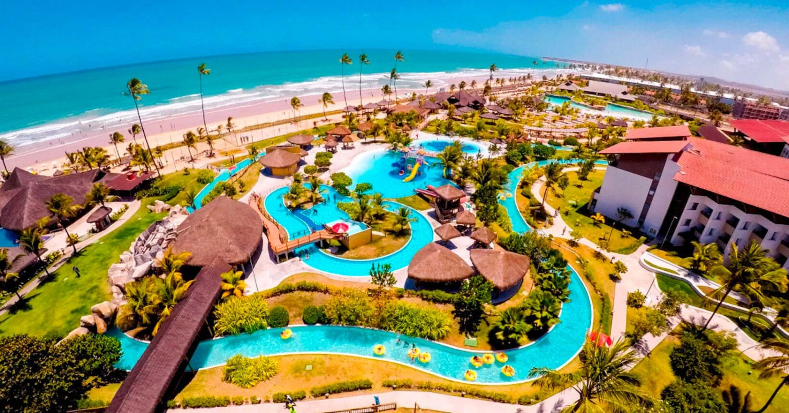

Porto de Galinhas
Porto de Galinhas, é um distrito localizado na cidade de Ipojuca, em Pernambuco, a cerca de 60 km de Recife. A vila é um dos melhores destinos de praia não apenas do Nordeste, mas do Brasil. Não é preciso dizer muito para explicar o lugar: suas praias, caracterizadas pelas águas verdes e pelas entre piscinas naturais, saltam aos olhos e arrancam elogios dos mais descrentes. O distrito e tem a facilidade de estar próximo do Aeroporto Internacional do Recife, fato que facilita muito chegada a Porto de Galinhas. Suas águas mornas e agradáveis em todo o ano convidam para um mergulho e têm potencial para conquistar pessoas de todas as idades.
 
As principais praias de Porto de Galinhas são praia Cupe, Muro Alto, Porto de Galinhas e Maracaípe.
Pontos turísticos de Porto de Galinhas:
- Piscinas Naturais
- Vila de Porto de Galinhas
- Museu das Tartarugas
- Ateliê Gilberto Carcará
- Pontal de Maracaípe (arredores de Porto de Galinhas)
- Praia do Cupe (arredores de Porto de Galinhas)
- Ponta do Serrambi (arredores de Porto de Galinhas)
- Praia dos Carneiros (saindo de Porto de Galinhas)
- Praia de Calhetas (saindo de Porto de Galinhas)